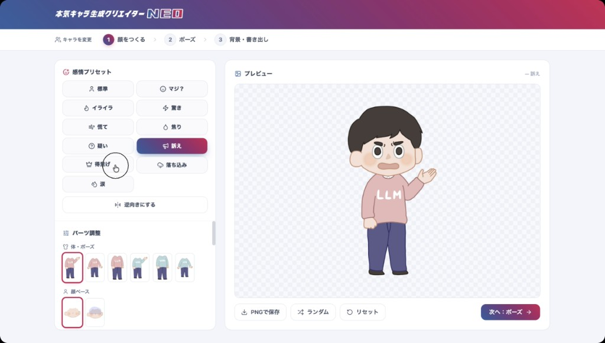

第4回 Q&A まとめ
開発合宿エピソードと15の質問。
すべてを貫くメッセージは ──
この図解は要点をまとめたものです。具体例やニュアンスなど、より詳しい内容は動画本編でご覧ください。
ツールは変わる。シンプルから始めた人が強い。
「既製品では届かない」自分専用の武器は、小さく積み上げた先にある。
まず開発合宿エピソードから。そのあと15の質問と回答を図解していきます。
はじめに｜社内2日間開発合宿
質問コーナーに入る前に、マコさんから紹介があったエピソードです。
企画から開発まで、2日間で1人で完結させる
参加メンバーは全員ADSの学びの土台を持ち、日常的にAIを活用している状態。全メンバーの発表がクオリティ高く、マコさんが驚いたとのこと。
紹介された事例｜デザイナーが作ったツール

残り2ヶ月でやるべきこと、3つ
ドリルを継続
怠らずに続ける
実務ツール開発
課題に関わらず挑戦
AIに聞く
知識の土台を築く
全15問の目次
ハーネスエンジニアリングをうまく行うコツ
ハーネスエンジニアリングとは一連のプロセスを明確化し、サブエージェント・フックなどのAIをうまく操作することと理解しました。よりうまく行うコツはありますか。
最初からやりすぎないことがコツ
シンプルに始めて、ダメなところだけ育てていく。
ハーネスを装着する順番（必ず下から）
一気に装着すると、何が間違っているかがわからなくなってしまう。最初からゴテゴテと付けすぎるとAIの性能をむしろ奪ってしまう危険性がある。
「シンプルに始めていきましょう。まずはAIにざっくりと丸投げして、その次は模範解答を渡してみて、それで何がダメかというのを認知してからハーネスを組み立てていく」
データ保存3形式（Markdown・JSON・DB）の判断の勘所
GitかDBか、MarkdownかJSONかなど、人間で判断しないといけない勘所が多い。それぞれのメリット・デメリットは理解したが実際の場面での判断が難しい。この勘所は場数をこなして養うしかないのでしょうか。
迷ったらMarkdownから始める
最も手軽で、AIの性能を落とすこともないから。覚悟があるなら最初からDBもアリ。
3形式の使い分け
飲食店の例え：カジュアルなら既製品で十分。一流レストランなら最初から全部こだわる。
Gitで履歴管理
構造化データに向く
Gitでは扱えない領域
「自分がどこまでの完成度のものを作りたいのかによって判断は変わります。だけど迷ったらMarkdownで管理するところから始めたらいいはずです」
Quiz Studio設計と「小さく作る」の両立
開発を進めると設計思想の重要性を感じます。Quiz Studioを例にすると決断すべきことが多く、選択肢すべてがグッドで判断に迷うとき、真子さんはどんなプロセスで決断していますか。
小さく作って大きく育てていくが大原則
作りながら気づく発見を捨ててしまうから、一気に作ってはいけない。
一気に作ろうとするとぶつかるAIの3つの壁
自分の理想を詰め込んで高度なものを一気に作らせると→性能が劣化して言ったはずのことをやってくれない
ウィンドウ
リグレッション
一気に作ると「そもそもこうすればよかった」というやり直しが膨大になる。トークンも時間も無駄。
「たぶん最終的にはDBにしたくなる」と未来が読めるようになっていく。これが知識と経験によるスピードの差。
「小さく作って大きく育てていくが大原則です。あとは知識と経験によって出せるスピードが変わってきます」
設計と実装の比重9:1は適正か
現在「設計：実装＝9:1〜8:2」に偏っています。設計が甘いと手戻りとトークン消費が跳ね上がるから。この比率が適正なのか、寄せすぎなのか判断がつきません。マコさんの肌感でいいので教えてください。
集中力は設計に9割。実装はほぼ全自動。
ただし実装時間の9割はPRテスト・AIレビュー待ち。コードは1行も読まない。
マコさんの実際の時間の使い方
設計が9割。grill-meやプランモードで「うーん、どうしようかな」と考えて選択肢から選ぶ時間。
長く見えるが、PRのテスト実行・AIレビュー待ちが9割。その間は同時並行で別の作業をしている。
一番重要なのはコンセプト
「このツールがどこに向かうのかを自分で言語化できているか」。コンセプトが明確でないとやり直しが増える。参考書籍：「コンセプトの教科書」
「実装するというのは私の肌感覚ではもうほぼ全自動です。もうAIの書いたコードを1行1行読むことはありません」
フックとエージェントチームは今後の講義で扱うか
第1回で挙げた4武器のうちスキルとサブエージェントは身近になりましたが、フックとエージェントチームはまだ遠いままです。今後の講義で扱う予定はあるのでしょうか。
がっつり時間を取る予定はありません
中級者以上になってから使うもの。今は基礎を使いこなす時期。
エージェントチームとフック、それぞれの実態
- 週1回も使わない
- トークンをめちゃくちゃ使う
- なぜ上手くいったかの検証が難しく再現性が低い
- 今はDynamic Workflowsの方が開発で注目
- AIの意思に頼らずプログラムを動かす仕組み
- デバッグがめちゃくちゃ大変
- まず1つ設定して動かしてみることが一番の近道
「AI活用・AI開発の中級者以上になってから使ったほうがいいんじゃないかなと思っています。適切に小難しいフックを設計できたときにAIの限界を超え得る可能性があるよ、というだけで」
マコさんが日常的に使うスキルは？Superpowersは使っている？
マコさん自身が日常的に使っているスキルやサブエージェントを具体的に知りたいです。Superpowersのような他人の詰め合わせセットをそのまま入れるべきかも合わせて知りたいです。
Superpowersは使っていない。スキルは1〜2週間ごとにチューニング
入れたものがダメとは思わないが、取捨選択し続ける必要がある。
今マコさんが使っているスキル
ないと困る開発の必需品。
Linearのタスク作成。開発の柱の2つ目。
美容室の予約。カレンダーを見て一定期間空けて自動予約。重宝している。
目的が明確な自分専用のスキルたち。汎用ではない。
Superpowersの使い方の注意点
中身を理解せずにパッケージをドーンと入れた状態だと、いるスキルかいらないスキルかの判断ができなくなる。使うなら毎日使いながら取捨選択し続けること。
「1〜2週間ごとにチューニングをしているので、伝えたものが1週間後には私は使っていないということが起きてしまいます」
Opus 4.8がなんとなく「頭がよくない」と感じる件
Opus 4.8を使っていてなんとなく抜けている、頭がよくないと感じることがあります。これはモデルの特性でしょうか？使い方の問題でしょうか？
Opus 4.8は時々バグります
公式も認識している問題。Fable 5が出てから不安定になっている。
特にFable 5が出たタイミングからOpus 4.8が不安定に。過去にも他のモデルで同様のことが起きている。
最近はずっとOpus 4.7を使っていた。様子がおかしいと思ったら他のモデルを使って調べてみる。
「なんか様子がおかしいな、何言っているかわかんないなと思ったら他の会社のモデルなどを使って調べてみてください」
Claude Fable 5をOpus 4.8と比べた革新的な違い
Fable 5を3日だけ使いまくられたということですが、Webツール開発においてOpus 4.8やSonnet 4.6と革新的に違うところはどこにあったのでしょうか。
一言で「とにかく賢い」
ただし全世界停止中（2026年6月12日〜）。復旧未定。
Fable 5（Mythos）とは
Anthropicが2026年6月9日に公開した最上位モデル。Opusの上に新設されたMythosクラスの第一弾。
マコさんが実感した違い
「本気AIのキャラクターごとの微妙なセリフのニュアンスを完璧に再現してくれるようになった。Opus 4.8の6月8日とFableが出た6月9日で明らかにクオリティが変わった。人間が一夜にして急成長することはないので、Fableの恩恵がばかでかかったと確信に至った」
すごい分お金もかかる。高度なことをやらせたいときにおすすめ。
「すごいぞと。ただしすごい分お金もかかります。高度なことをやらせたいときにおすすめです」
Claude Code Routinesはどんなもので、どう使う？
Claude CodeのRoutinesはどんなもので使うべきでしょうか。Claude Codeを使っていない方もいる中で、ADS受講生はこの新機能をどう捉えればいいでしょうか。
まずは定期時間で何かをやってもらうことから始めるのがおすすめ
仕組みを理解して、自分でどう使えるかを考えて動かしてみることが最重要。
Routinesとは
「この条件を満たしたら動いてね」という仕組み
のような定期タスク
GitHubにプッシュする
Cursorユーザーは「Automations」が同等機能。Claude Code専用ではない。
「仕組みを理解したうえでこういうことに使えるんじゃないかなと自分で考えて自分の手で動かしてみることです。本当に誰にとっても便利な使い方があるのであれば、それはもう話題になっているし機能になっているはずです」
本当に作るべき課題を見つける方法
AIで何かを形にする力はついてきましたが、自分のツールで仕事が劇的に変わったレベルの達成感はまだなく、本当に作るべきものの解像度を高く見つけられていない焦りがあります。良い方法やコツがあれば教えてください。
めんどくさいを見つけること。それだけ
これ以上にいい方法を私は知りません。アイデアはポンポン生まれない。
大前提として伝えたいこと
「間違いなく皆さんの人生に役立つ」と断言できる。
環境・役職・人間関係との掛け算が必要。
「めんどくさいを言語化する＝アンラーニング」
無意識でやっていることを意識にする。自分でやっていることを言語化すること。
マコさん自身の経験
「私は今AI時代の動画編集ツールを作ることにエネルギーを注いでいます。でもこれを作るとなるまでにすごく時間がかかった。半年前は今開発しているプロダクトのイメージを持てていなかった」
「めんどくさいを見つけるには自分でやっていることを言語化することです。無意識でやっていることを意識にする。アンラーニングする。これ以上にいい方法を私は知りません」
個人→社内→顧客のツール公開判断と商用化の壁
①自分で使う②社内で使う③お客様に使ってもらうのステップで、②→③のハードルが高く感じます。どこまで作り込んだらお客様に使ってもらっていいか、判断基準を教えてください。
「どこまで作り込んだらいいか」はAIに聞いてください
商用は難易度が10倍になる。昔より個人でも商用が遥かに簡単になった。
社内で使う vs お客様に使ってもらう
ADSで学んだ範囲を超える、入念な準備が必要になる。
サーバー費用・ビジネスモデル…
難易度が10倍
「是非皆さんのなかで商用レベルのプロダクトを目指して公開まで持っていく人が1人でも多く増えてほしいと願っています。昔の時代に比べたら個人でも商用レベルのサービスを作り上げることははるかに簡単になりました」
「どこまで作り込んだらお客様に提供していいのか、この言葉のままAIに聞いてみてください」
一般常識的なセキュリティはどうAIに指示すれば対応できるか
社内で使うにも無償でも有償でも誰かに提供する場合はセキュリティ的な責任が発生します。一般常識的なセキュリティレベルはどのようにAIに指示すれば対応できるのでしょうか。
「AIに聞いて言ってきたことを理解できること」が大事
「自分のアプリをセキュリティ観点で分析して」とそのままAIに聞く。
セキュリティ対策の実装はADSの皆さんでもできる。AIに聞いて実装する。
どんなセキュリティリスクがあるかを自分の言葉で説明できる状態になること。
「AIに聞いて言ってきたことを理解できることです。AIに『こういう理解であっていますか』と言って理解を深めていけば、まったくわからないということはないはずです」
フィジカルAIへの見解
フィジカルAIが最近注目されていますが、真子さんはどう考えていますか。
めちゃくちゃ注目しています
ADSの学びはフィジカルAIにも確実に通じる。
フィジカルAIとは
物理的な能力を持ったAI（≒ロボット）。ソフトウェアだけの市場より、物理的なもので成り立っているこの世界の方が市場が圧倒的に大きい。
ADSの学びが通じる理由
フィジカルAIを制御するのもAIでソフトウェア。ハードウェアの制御はソフトウェアエンジニアリングの話になる。「ハーネスエンジニアリングの極致みたいなもの」。
「フィジカルAIはハーネスエンジニアリングの極致みたいなものですから、皆さんがAI-Driven Schoolで学んだことはこれから間違いなく大きな世界を変える波になるであろうフィジカルAIにも通じています」
Fable 5でポン出しできる時代のADS受講の価値
Fable 5で試したら2ヶ月かけた課題以上のものができました。誰でもなんとなくで作れるなら小難しいことを学ばなくてもいいじゃんと思いました。ADS受講した人とそうでない人の差はどこに現れますか？
全く無駄にならない。土台を固めた人が勝つ。
新しい技術が出るたびに「もうこれでいいじゃん」と言われてきたが、歴史が証明している。
「学んでも無駄では？」への答え：歴史が証明している
小学校の筆算 → 今の生活にとてつもなく役立っている基礎教養。計算しなくても学ぶ意味があった。
英会話は自動翻訳で不要では？→ 英会話には「文化理解」という要素が大きい。翻訳機では代替できない。
Excelで会計士が失業すると言われた時代 → 実際には会計士が増えた。「数字を解釈する価値は残った」。
ブラウザ・サーバー・データベースが何かを理解した上でAIに任せる人は、全く知らずに任せる人より確実に速く・深く動ける。土台があるから判断できる。
毎日の生活習慣・コミュニケーション・仕事への取り組み方。スキルと教養があっても、人間力が低いと活かせない。「どう付加価値をつけられるか」と前向きに考えられる人が強い。
「ADSを受けてどうやって付加価値をつけますかというよりも、私はこんな付加価値をつけられると思う、と前向きに考えられる方が人間力が高い方だと思います」
スクール卒業後の学習継続
スクール終了後に成長が止まる不安があります。自分のキャリアの選択肢を広げ、能力の柱として育てていくためには、卒業後にどのような学習や実践を続けていけばいいでしょうか。
2つあります
①明確な目的意識を持って開発する ＋ ②仲間を見つける
- 自分の作りたいと思うものを開発し続ける
- 目的意識がある限りスキルは育ち続ける
- 一緒に開発する・学ぶ仲間
- 利害関係なく、直接オフラインで会えるとなお良い
「1人でモチベーションを維持するというのは難しいことです。いろんなコミュニティに顔を出したり自分なりに活動していくと必ず同じ志を持った仲間と出会えるはずです」
いよいよ残り2ヶ月
ここまで来た皆さんは着実に力をつけています。
最後まで一緒に走り抜けましょう。
今週末は第4回月次課題の締め切りと第9回講義があります。
課題に不安がある方は月次課題シェアチャンネルを活用してください。